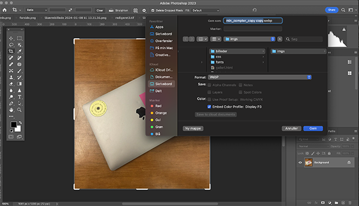
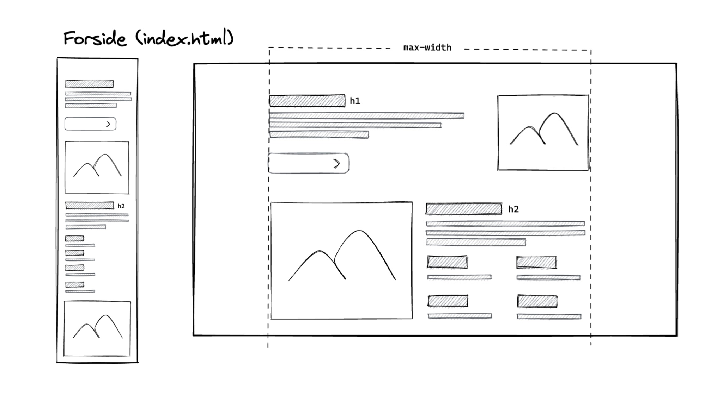
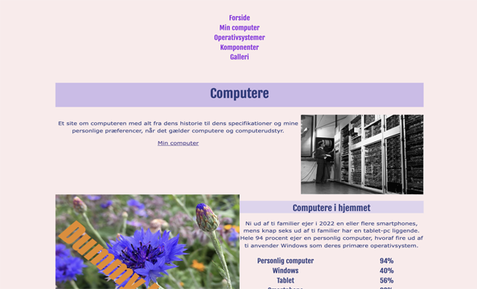

TEMA 02
GRUNDLÆGGENDE WEB
GRUNDLÆGGENDE WEB
GRUNDLÆGGENDE WEB


I Tema-02 fik vi en grundlæggende forståelse af centrale begreber inden for multimediedesign. Fokus i kodningen var på HTML og CSS, hvor vi lærte at opbygge koden ved at benytte et givet wireframe. Brugen af CSS Grid, Flex, og Media Queries blev introduceret for at opnå ønsket sideudseende og responsivitet.
Samtidig blev mappestruktur, navigation og navnekonventioner præsenteret, hvilket har lagt grundlaget for en effektiv arbejdsgang og organisering i efterfølgende opgaver. Desuden fik vi en indføring i billedbehandling i Adobe Photoshop. Disse værktøjer har jeg efterfølgende anvendt i senere opgaver.
Især har viden om filformater, beskæring og størrelse været essentiel for at sikre korrekt opløsning og størrelse af billeder, så de passer optimalt ind på hjemmesiden uden at fylde for meget.
Se løsningen hér
